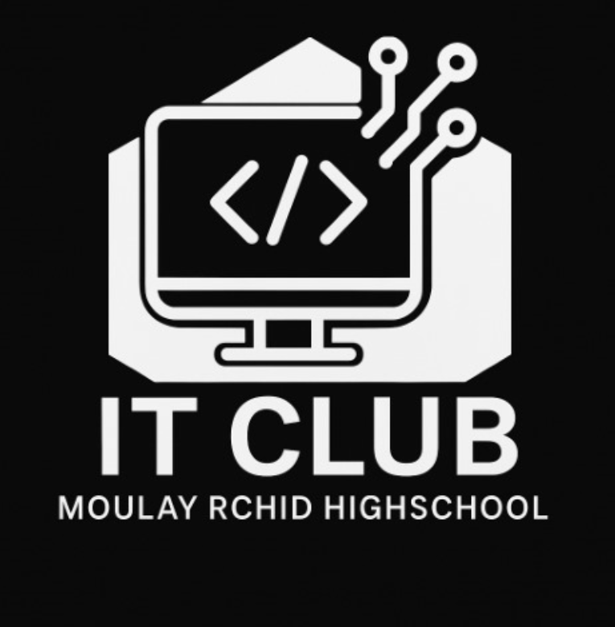

L'homme n'a pas été créé pour rester immobile, mais pour lutter, tomber, et se relever.
Chaque échec est une leçon, chaque cicatrice une porte vers la grandeur.
Ne pas avancer, c'est se figer. Avancer, même dans la douleur, c'est vivre. ---L'Ascension Inachevée
Chaque échec est une leçon, chaque cicatrice une porte vers la grandeur.
Ne pas avancer, c'est se figer. Avancer, même dans la douleur, c'est vivre. ---L'Ascension Inachevée

MORATEC
IT CLUB
Notre club IT à Chefchaouen s'engage à renforcer les compétences numériques de notre ville et du Maroc.
Nous croyons que la technologie est un outil clé pour le développement. Par des ateliers pratiques, nous préparons les jeunes aux défis de l'économie numérique.
Notre mission : faire de Chefchaouen un centre d'excellence IT, et contribuer à la croissance numérique du Maroc. ---Massine
Nous croyons que la technologie est un outil clé pour le développement. Par des ateliers pratiques, nous préparons les jeunes aux défis de l'économie numérique.
Notre mission : faire de Chefchaouen un centre d'excellence IT, et contribuer à la croissance numérique du Maroc. ---Massine
"Rejoignez-nous pour façonner l'avenir de la technologie."
Participez à nos ateliers pratiques et projets pour développer vos compétences en informatique, cybersécurité, et entrepreneuriat numérique.
Aidez Chefchaouen à devenir un hub tech et contribuez à la croissance numérique du Maroc. ---Sohaib
Participez à nos ateliers pratiques et projets pour développer vos compétences en informatique, cybersécurité, et entrepreneuriat numérique.
Aidez Chefchaouen à devenir un hub tech et contribuez à la croissance numérique du Maroc. ---Sohaib
Contactez-nous
itlqpmr@outlook.com
+212659806461